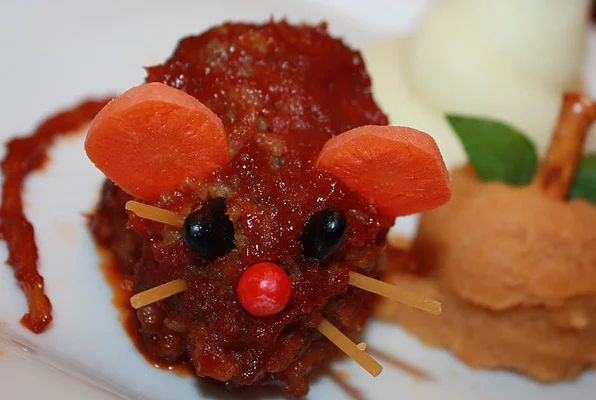

Baked Bloody Rats

Halloween Entree with Mealoaf
This is a fun, inexpensive, creepy Halloween entree that will gross out and impress your dinner guests. It is mini meatloaves baked in tomato sauce that are shaped like rats with cheese in the middle. When you cut it open, gooey cheese will come oozing out. Garnished with a spaghetti noodle tail and carrot ears, these pests are sure to be a devilishly delectable dinner.
Ingredients
- 2 pounds ground beef
- 1/2 onion, chopped
- 1 egg, beaten
- 1 cup dry bread crumbs
- 1 (1.25 ounce) packet of meatloaf seasoning mix
- 1 cup cubed Cheddar cheese
- 3 (10 ounce) cans tomato sauce
- 1 cup white sugar
- 1 tablespoon Worcestershire sauce
- 1 ounce uncooked spaghetti, broken into fourths
- 1/2 carrot, cut into 1/8-inch thick slices
- 1 tablespoon frozen green peas
Steps
- Preheat the oven to 350 degrees F (175 degrees C).
- In a large bowl, combine the ground beef, onion, egg, bread crumbs, and meatloaf seasoning. Use your hands to mix until well blended. Measure out 1/3 cupfuls of the meat mixture and mold around a cube of cheese like a meatball. Shape into a point at one end and lengthen the body a bit by rolling between your hands. Place your ''rat'' into a shallow baking dish, and continue with the remaining meat. Insert pieces of uncooked spaghetti into the rounded end of the rats to make tails.
- In a medium bowl, stir together the tomato sauce, sugar and Worcestershire sauce. Pour over the rats in the dish and cover the dish with a lid or aluminum foil.
- In a medium bowl, stir together the tomato sauce, sugar and Worcestershire sauce. Pour over the rats in the dish and cover the dish with a lid or aluminum foil.
- While the rats finish baking, heat the peas and carrots in a small bowl in the microwave for about 15 seconds.
- While the rats finish baking, heat the peas and carrots in a small bowl in the microwave for about 15 seconds.